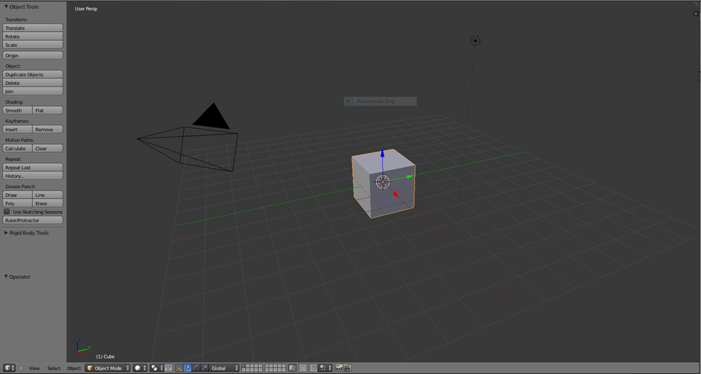
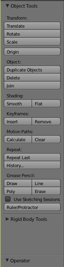
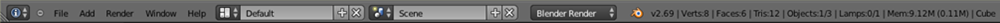
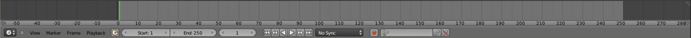
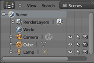
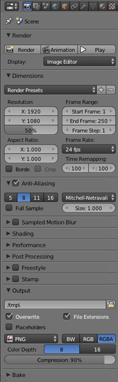
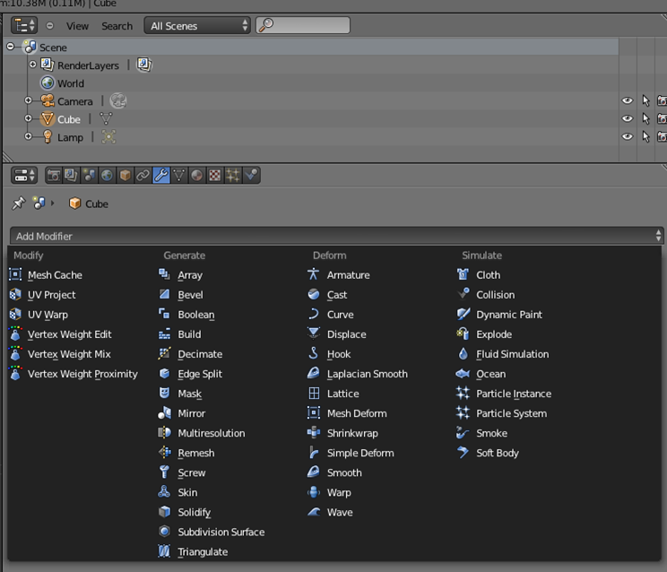

- Introduction
- 1. Club Items
- 2. Web
- 3. Forensics
- 4. Hardware
- 5. Software
- 6. Binary
- Published using GitBook
Introduction to Blender
What is Blender?
Taken directly from the site "Blender is a free and open source 3D animation suite. It supports the entirety of the 3D pipeline—modeling, rigging, animation, simulation, rendering, compositing and motion tracking, even video editing and game creation." To say the least, Blender is a highly advanced program.
What can Blender do?
- Create 3D models
- Create armatures and animations
- Render images and animations
- Create simulations
- Can be used as a game engine
- Image editor
- Video editor
- Text editor
Why Blender?
Blender is free!

The Blender UI is highly customizable due to the fact that you can create many windows that display different things. Figure 2 shows a 3D view first and foremost, on the bottom a timeline, and on the right the outliner and properties. The different windows will be explained separately.
3D View

The 3D view provides a view of the model you are using. It also has tools, cameras, lights, and object deformation abilities.
Tool Bar: In Depth

The tools at your disposal include:
- Transform manipulation
- History control aka ctrl z
- Primitive additions
- Relations (Parenting and grouping)
- Animation control with keyframes, motion paths, and baking
- Rigidbody tools for physics
- Grease pencil
- And once you enter object mode, a whole lot of deformation options
Info Bar

The info bar is found in most programs and functions the same as others.
Animation Timeline

To make animations in Blender is a simple task because of the automatic keyframe insertion feature which will calculate motions for you with only a few simple frames.
The Outline

It is a tree of object currently in the scene you are working in.
Properties

Many properties can be accessed. Just look at all of the tabs at the top.
Modifiers

Modifiers can cause awesome things to happen to your model or scene. The best way to learn about how they work is to play around.
Hotkeys
Hotkeys make life easier, here are important ones
- Tab - used for switching to edit mode and back (object needs to be selected)
- Shift S – cursor snap
- Ctrl S – save
- X – delete
- Z – X-ray
- Shift-A – Add an object
- Ctrl-P – Parent an object
- I - Insert keyframe